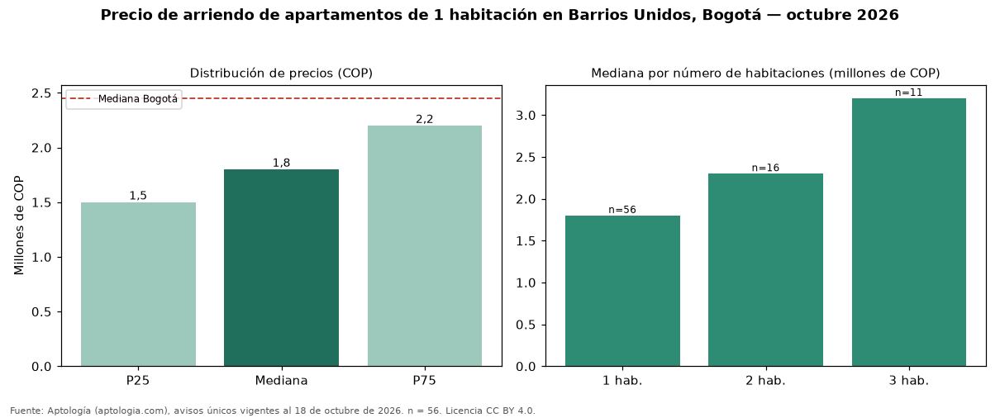

Precio de arriendo de apartamentos de 1 habitación en Barrios Unidos, Bogotá — octubre 2026
En Barrios Unidos, Bogotá, la mediana de canon mensual de apartamentos de 1 habitación es COP 1.800.000, según 56 avisos únicos vigentes. Frente al total de Bogotá (COP 2.450.000), el barrio está 27 % por debajo. El área mediana anunciada es 30 m² (en Bogotá: 41 m²). En el mismo barrio, la mediana de apartamentos es COP 2.300.000 con 2 habitaciones, COP 3.200.000 con 3 habitaciones. El estrato más frecuente en los avisos es 4. Por metro cuadrado, la mediana es COP 60.000/m² (−3 % frente a COP 61.607/m² en Bogotá). Cuando el aviso informa la administración (17 casos), su mediana es COP 312.000, cerca de 17 % del canon mediano. Datos abiertos CC BY 4.0 de Aptología; fuente y búsqueda de inmuebles: https://www.aptologia.com/arriendo/bogota/barrios-unidos. Archivos: PDF de 2 páginas, CSV con las cifras y gráfica PNG.

| Avisos únicos | 56 |
|---|---|
| Percentil 25 | COP 1.500.000 |
| Mediana | COP 1.800.000 |
| Percentil 75 | COP 2.200.000 |
| Mediana por m² | COP 60.000 |
Fuente: avisos vigentes de portales inmobiliarios recopilados por Aptología, deduplicados (mínimo 30 avisos únicos por celda). Precios pedidos, no cerrados. Fecha: 2026-10-18.